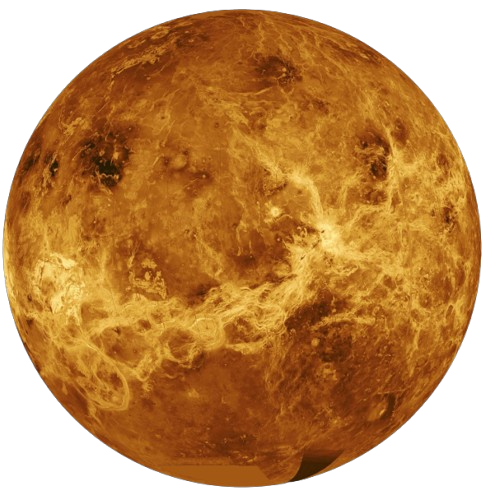

Merkur, den nærmeste planeten til solen, har ekstreme temperaturer,
alt fra brennhete om dagen til iskulde om natten. Den har ingen
atmosfære som holder på varmen, en overflate dekket av krater, og er
den minste planeten i solsystemet.
Venus

Satellitter
Masse
Tyngdekraft
0
4,86724 kg
3,7m/s2
Venus, jordens "søsterplanet", er dekket av tykke skyer av
svovelsyre. Overflaten er glohet, med temperaturer rundt 465 °C, og
atmosfæren er tett av karbondioksid. Venus roterer sakte og i
motsatt retning av de fleste planetene i solsystemet.
Jordkloden
Satellitter
Masse
Tyngdekraft
1
5,972224 kg
9,81m/s2
Jorden, den tredje planeten fra Solen, er unik ved å støtte liv. Den
har en balansert atmosfære av nitrogen og oksygen, flytende vann, og
et magnetfelt som beskytter mot solstråling. Jordens overflate er
variert, med hav, kontinenter og isdekkede poler. Den opplever
årstider på grunn av sin aksehelling.
Mars
Satellitter
Masse
Tyngdekraft
2
6,3923 kg
3,73/s2
Mars, kjent som "den røde planeten" for sin jernrike jord, har en
kald, tynn atmosfære bestående av karbondioksid. Overflaten er
preget av enorme vulkaner, dype kløfter og isdekkede poler. Bevis på
eldgamle vannstrømmer gjør det til et sentralt fokus for søket etter
liv og menneskelige utforskningsoppdrag.